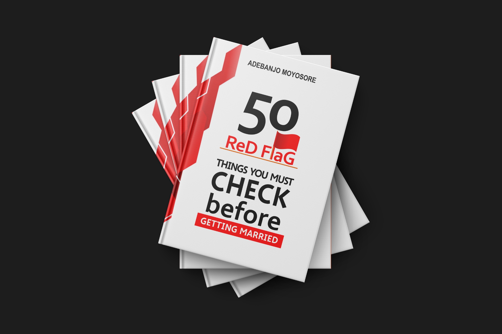

Private counseling
Start a conversation about what is on your heart and explore the support that may be right for you.
Enquire about a session ↗Honest conversations, thoughtful guidance, and resources for the relationships that shape your life.
Whether you’re navigating a relationship, reflecting on old patterns, or looking for a fresh perspective, there is room here for honest conversation and growth.
Start a conversation about what is on your heart and explore the support that may be right for you.
Enquire about a session ↗Explore relationship resources designed to encourage reflection beyond a single conversation.
Visit the bookshop ↗Join conversations about relationships, family life, healing, and becoming a better version of yourself.
Explore the community ↗Adebanjo Moyosore is the founder of Relationship & Reality Consult Africa. Based in Lagos, Nigeria, he supports individuals and couples in Nigeria and the diaspora through relationship coaching and conversations about emotional healing.
He describes more than four years of professional experience and training in counseling, basic psychology, and parenting toddlers. As convener of the HEARTRUB Conference, he brings people together for conversations about relationships, dating, trauma, and emotional healing.
Relationship coach · Trauma recovery specialist · Author · Speaker
Connect with Moyosore ↗By Adebanjo Moyosore
Written for women, this book offers a perspective on relationship experiences and the understanding of men and sex.
Find the book on Selar ↗Explore this title and more in Moyosore’s bookshop.

By Adebanjo Moyosore
A guide to recognising relationship warning signs and reflecting on important concerns before marriage.
Find the book on Selar ↗Thoughtful perspectives on relationships, personal growth and the choices we make together.
Having standards matters. So does the wisdom to look beyond appearances and consider the qualities that build a healthy connection.
Read the Facebook post ↗Communication, commitment and respect are worth paying attention to as you consider a future together.
Read the Facebook post ↗Strong leadership can begin with humility: listening carefully, reflecting and being open to another perspective.
Read the Facebook post ↗Reflect on the patterns you learned growing up and how they might shape the relationships you choose today.
Read the Facebook post ↗A look at gatherings that brought people together to reflect, learn and grow.
Trinity House, Victoria Island, Lagos, Nigeria
An online event hosted by Erioluwa Moyosore Adebanjo.
Connect with a community exploring love, family, healing, and the work of becoming. Join the conversation and take your next step alongside others.